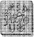

ARTEMİS'in asıl sorunu, yer saptama konusundaydı - bir Leprechaunun yerini saptamak. Bunlar kim bilir kaç bin yıldır ortalıklarda dolanan, az sayıda periden oluşan bir gruptu ve yine de onlarla ilgili ne bir fotoğraf vardı, ne bir film karesi. Hatta Loch-Ness tipi bir muziplik bile yoktu. Tam anlamıyla, toplum içine çıkan bir grup sayılmazlardı. Ve de çok zekiydiler. Şimdiye kadar hiç kimse elini peri altınına sürememişti. Ama şimdiye kadar hiç kimse Kitab’a da ulaşamamıştı.-Ve anahtar elindeyken, bulmaca çözmek o kadar basitti ki.
Artemis, Kâhyaları çalışma odasına çağırmıştı, şimdi ise küçük bir kürsünün arkasına geçmiş, onlara ders veriyordu.
“Her perinin, sihrini yenilemek için yapması gereken bazı ayinler var,” diye açıkladı Artemis.
Kâhya ve Juliet sanki bu sıradan bir konuşmaymış gibi başlarıyla onayladılar.
Artemis Kitab’ın kendine hazırladığı bir kopyasının sayfalarını karıştırıp içinden bir bölüm seçti.
“Senin gücün topraktan gelir,
Bu güç herkese verilmez, minnettar olman gerekir. Büyülü tohumu kopart dalında,
Dolunayın, eski meşe ve sapkın suyla birleştikleri noktada.
Ve onu, bulduğun yerden göm uzağa,
Böylelikle armağanını geri vermiş olursun toprağa.” Artemis metni kapadı. “Anlıyor musunuz?”
Kâhya ile Juliet, şaşkınlık içinde başlarını olumluca sallamayı sürdürdüler.
Artemis iç geçirdi. “Leprechaunlar bazı ayinler yapmak zorundadırlar. Bunların oldukça kendine özgü ayinler olduğunu belirtmem gerekir. İçlerinden birini ele geçirmek için, bu ayinlerden yararlanabiliriz.” Juliet söz almak için elini kaldırdı, oysa Artemis’ten dört yaş büyüktü.
“Evet?”
“Şey Artemis, sorun şu,” dedi duraksayıp, Juliet bir yandan da mahalledeki serserilerin hoşlandıkları gibi sarı saçlarından ince bir tutamı burarak, “Leprechaunlarla ilgili olan bölüm.”
Artemis kaşlarını çattı. Bu kötüye işaretti. “Ne demek istiyorsun, Juliet?”
“Şey, leprechaunlar. Onların gerçek olmadıklarını biliyorsun, değil mi?”
Kâhya yüzünü buruşturdu. Kesinlikle onun hatasıydı. Kız kardeşini bu özel görev hakkında bilgilendirmek için bir türlü zaman ayıramamıştı.
Artemis kaşlarını azarlarmış gibi çatıp Kâhya’ya baktı.
“Kâhya seninle bu konuyu konuşmadı mı?”
“Hayır. Konuşması mı gerekiyordu?”
“Evet, kesinlikle. Belki de onunla dalga geçeceğini sanmıştır.”
Kâhya huzursuzca kıpırdandı. Bu tam onun düşündüğü şeydi. Juliet onunla sürekli dalga geçmeyi başaran, hayattaki tek insandı. Çoğu insan bunu bir kez yapmayı denemişti. Yalnızca bir kez.
Artemis boğazını temizledi. “Bu Peri Halkının gerçekten yaşadığını ve benim anlamsız sesler çıkaran bir kuş beyinli olmadığımı varsayarak, işimize dönelim.” Kâhya başıyla onayladı. Juliet ikna olmamıştı. “Pekâlâ. Demin de söylediğim gibi, Peri Halkının, güçlerini tazelemek için, özel bir ayin yapması gerekmektedir. Benim yorumuma göre, bir nehir kıvrımının kıyısındaki eski bir meşe ağacından bir tohum kopartmaları gerekiyor. Ve bunu da dolunay sırasında yapmaları gerekiyor.”
Anlatılanlar, Kâhya’nın kafasına dank etmeye başlamıştı. “Yani tek yapmamız gereken...”
“Havauyduları aracılığıyla bir eşleştirme yapmak, bunu da yaptım zaten. İster inanın, ister inanmayın, çok fazla sayıda eski meşe ağacı kalmamış, eski derken yüz yıllık ve üzerindeki ağaçlardan söz ediyorum tabii. Nehrin dirseği ve dolunay etkenlerini de göz önüne alacak olursanız, bu ülkede incelememiz gereken tamı tamına yüz yirmi dokuz nokta var.”
Kâhya sırıttı. Hele şükür, Efendisi onun anlayabileceği dilde konuşmaya başlamıştı.
“Konuğumuz gelmeden yapmamız gereken hazırlıklar var,” dedi Artemis, bilgisayarda yazılmış bir A4 sayfasını Juliet’e uzatarak. “Bunlar mahzende yapılması gereken değişiklikler. Onları yerine getir, Juliet. Harfi harfine.”
“Tamam, Arty.”
Artemis kaşlarını çattı, ama hafifçe. Tam olarak kavrayamadığı bazı nedenlerden dolayı, Juliet’in kendisini, annesinin ona taktığı isimle çağırmasından çok fazla rahatsız olmuyordu.
Kâhya düşünceli düşünceli çenesini kaşıdı. Bu hareketi, Artemis’in gözünden kaçmamıştı.
“Bir sorun mu var?”
“Şey Artemis. Ho Chi Minh Şehirdeki sprite...”
Artemis başını salladı. “Biliyorum. Neden onu kaçırmadığımızı merak ediyorsun.”
“Evet, efendim.”
“Yedinci yüzyılda, kayıp Sh’shamo kentinde ortaya çıkan, Chi Lun’un Peri Halkının Almanağındaki bir elyazmasına göre: ‘Bir peri, Çamur Adamlarla’ — yani, bunlar bizler oluyoruz - ‘içki içerse bulunursa, kardeşlerinin gözünde sonsuza kadar ölmüş sayılır.’ Bu yüzden, peri cin, tek bir ons altın bile etmez. Yo, eski dostum, bize taze kan gerek. Anlaşıldı mı?”
Kâhya başım salladı.
“Güzel. Şimdi, dolunay gezintimiz için toparlaman gereken birkaç parça eşya var.”
Kâhya kâğıda dikkatlice göz gezdirdi: Temel arazi gereçleri, birkaç sıra dışı eşya, pek şaşırtıcı bir şey yoktu, ta ki...
“Güneş gözlüğü mü? Gece vakti mi?”
Artemis şu anki gibi gülümsediğinde, insan, dişetlerinin içinden vampir dişleri fırlayacağını sanırdı.
“Evet, Kâhya. Güneş gözlüğü. Güven bana.”
Ve Kâhya öyle yaptı. Tam anlamıyla.
Holly giysisindeki ısıl halkayı harekete geçirip, 4.000 metreye yükseldi. Sinekkuşu kanatları türünün en iyileriydi. Pil dört kırmızı çubuk olduğunu gösteriyordu — İngiltere Adaları üzerinden, kısa bir Avrupa kıtası gezintisi yapmak için yeter de artardı. Elbette kurallar gereği, olabildiğince deniz üzerinden uçmalıydı ama Holly, yolunun üzerindeki Alplerin en yüksek karlı tepesine dokunmadan edemezdi.
Giysisi onu en kötü şartlara karşı koruyordu ama yine de Holly iliklerine kadar işleyen soğuğu-hissetti. Bu yükseklikten bakıldığında, ay kocaman görünüyordu, yüzeyindeki kraterler rahatlıkla seçilebiliyordu. Bu gece yusyuvarlaktı. Büyülü bir dolunay. Yüzey hastası binlerce peri, yeryüzüne fırlatılmaya karşı koyamayacaklarından, Göçmen Departmanında çalışanların işleri başlarından aşkın olacaktı. Büyük bir çoğunluğu bunu başaracak, kuşkusuz şenliği kargaşaya dönüştüreceklerdi. Dünyanın çekirdek kabuğu yasadışı tünellerle kaynıyordu ve tümünü birden kontrol etmek olanaksızdı.
Holly İtalya’nın sahil şeridinden Monaco’ya kadar uçup oradan da Alpler üzerinden Fransa’ya geçti. Tüm periler gibi o da uçmaya bayılıyordu. Kitabın dediğine göre, bir zamanlar kendi kanatları vardı ama evrim onları bu güçlerinden yoksun bırakmıştı. Spritelar’ın dışında hepsini. Felsefe akımlarından biri, Peri Halkının, uçan dinozorlar soyundan geldiğini savunuyordu. Büyük olasılıkla, pterodaktillerin. Üst gövde kemik yapılarının büyük bir bölümü, onlarınkinin aynıydı. Bu kuram, kürek kemiklerinin üzerindeki ufak kemik yumrularını kesinlikle açıklığa kavuşturuyordu.
Holly yarı ciddi, Paris’teki Eurodisney’i ziyaret etmeyi düşündü. LEP’in burada görevli çok sayıda gizli ajanı vardı, büyük bir çoğunluğu Pamuk Prenses sergisinde çalışıyorlardı. Burası Peri Halkı’nın fark edilmediği, 'dünyanın az sayıdaki yerlerden biriydi. Ama turistlerden biri Holly’nin bir fotoğrafını çekip işin sonu internette bitecek olsa, Root hiç kuşkusuz rozetini geri alırdı. Holly pişmanlıkla iç çekip aşağıdaki rengârenk havai fişek sağanağının üstünden uçtu.
Kanalın üzerindeyken, Holly alçaktan uçup beyaz tepelikli dalgaların üzerinden zıpladı. Yunusları çağırdı ve onlar da Holly’ye ayak uydurmak istermişçesine suyun derinliklerinden, yüzeye doğru sıçradılar. Holly yunusların derisini ağartan ve sırtlarında kızarıklıklara neden olan kirliliği görebiliyordu. Ve gülümsemesine karşın, yüreği kan ağladı. Çamur Adamların yanıtlamaları gereken çok soru vardı.
En sonunda sahil, bir hayal gibi belirdi önünde. Eski ülke. Éiriu, zamanın başladığı yer. Gezegenin en büyülü yeri. Bundan 10.000 yıl önce, Dé Danann adı verilen antik peri soyu şeytan Fomorianlarla burada savaşmış ve sihirli patlamalarının gücü sayesinde, ünlü Devin Kazıklı Yolunu oymuşlardı. Başta peri krallarının, sonradan da insan Ard Ri’nin taç taktıkları Lia Fail, yani evrenin merkezindeki taş burada duruyordu. Ve ne yazık ki Çamur Adamların en çok sihir yüklendikleri yer de burasıydı, bu yüzden de buradaki peri görme oranı, gezegenin hiçbir yerinde olmadığı kadar yüksekti. Neyse ki dünyanın geri kalanı Mandalıların deli olduklarını düşünüyordu, bu İrlandalıların çürütmek için hiçbir çaba harcamadıkları bir kuramdı. Perilerin gittikleri her yere altın dolu bir küp taşıdığı düşüncesi kafalarında yer etmişti bir kez. Memurlarının tehlikeli görevleri yüzünden, LEP’in fidye için ayrılmış bir fonu olduğu doğruydu ama şimdiye kadar hiçbir insan, bunun tek bir külçesini bile alamamıştı. Ama bu durum, doğaüstü piyangoyu kazanma ümidiyle gökkuşaklarının çevresinde gizlice dolanan İrlanda halkını, işlerinden alıkoymadı.
Tüm bunların yanı sıra, Peri Halkının çekici bulduğu tek ırk, İrlandalılardı. Belki tuhaflıkları yüzünden, belki de eğlenceye olan düşkünlüklerinden. Ve başka bir kuramın öne sürdüğü gibi Peri Halkı’nın insanlarla ilgisi varsa eğer bunun başlangıç yeri büyük olasılıkla Zümrüt Adaşıydı.
Holly kolundaki saptayıcısında bir haritaya basıp büyülü noktaları taramak üzere ayarladı. Aslında en uygun yer, Lia Fail yakınlarındaki Tara idi ama böylesi bir gecede, yeryüzüne çıkma izni almış, geleneklerine bağlı tüm periler, bu kutsal manzaranın çevresinde dans ediyor olacaktı, bu yüzden en iyisi buradan vazgeçmekti.
Yakınlarda ikinci bir yer daha vardı, güney doğu sahilinin hemen bitiminde. Havadan gidişi kolay, kara yolunu kullanan insanlar içinse sapa ve tenhaydı. Holly gazı kesip seksen metreye indi. Yemyeşil ve sık ağaçlıklı bir ormanın üzerinden geçerek ay ışığıyla aydınlanmış bir çayırlığa çıktı. Gümüş renkli bir ırmak, araziyi ikiye yarıyordu ve işte tam orada, ırmağın dolambaçlı kıvrımlarının arasında görkemli meşe duruyordu.
Holly yaşam belirtisi var mı diye, saptayıcısına göz attı. İki tarla ötedeki ineğin bir tehlike oluşturmadığına karar verdikten sonra, motorlarını susturup büyük ağacın dibine doğru süzüldü.
Dört ay süren bir gözetleme sonucu tam bir profesyonel olan Kâhya bile, uzun nemli gecelerden ve böcek ısırıklarından dehşete düşmeye başlamıştı. Neyse ki her gece dolunay çıkmıyordu.
Hep aynı şeydi. Çıt çıkarmadan, folyo kaplı siperlerinde çömeliyorlar, Kâhya gereçlerini sürekli gözden geçiriyor, Artemis ise gözünü kırpmadan, teleskopun merceğine bakıyordu. Böyle zamanlarda doğa, sınırlı alanları içinde onları sağır ediyor gibiydi. Kâhya ıslık çalmaya, sohbet etmeye ya da doğaüstü sessizliği bozmaya can atıyordu. Ama Artemis dikkatini tam olarak bir noktada toplamıştı. Dikkatinin dağıtılmasına ya da araya girilmesine katlanamazdı. İş işti.
Bu gece güney doğudaydılar. Şimdiye kadar ki en erişilmez yerde. Kâhya tüm gereçleri bir çitten, bir bataklıktan ve iki tarladan geçirmek için üç kez cipin yanma gidip geri dönmek zorunda kalmıştı. Çizmeleriyle, pantolonu mahvolmuştu. Şimdi ise sığınağın içinde kıçından pis sular damlayan pantolonuyla oturmak zorunda kalacaktı. Artemis her nasılsa tertemiz kalmanın bir yolunu bulmuştu.
Sığmak tam bir tasarım harikasıydı ve imalat hakları herkesin ilgi odağı haline gelmişti bile - özellikle de askeri temsilciler arasında — ama Artemis, patentini spor eşyaları satan uluslararası bir şirkete satmaya karar vermişti. Sığmak çok menteşeli cam elyaf bir iskelet üzerine, esnek alüminyum polimer kaplanarak yapılmıştı. NASA’da kullanılanın bir eşi olan alüminyum ısıyı yapının içinde hapsederken, dışarıdaki kamuflajlı yüzeyin de fazlaca ısınmasına engel oluyordu. Bu da ısıya duyarlı hayvanların, onun farkına varmamalarını sağlıyordu. Menteşeler sığmak hangi çukura atılırsa atılsın, bir sıvıymış gibi hareket etmesini sağlıyordu. Bir acil siper ve seyir noktasıydı. Tek yapmanız gereken plastik çantayı bir deliğe sokup ipini çekmekti.
Ama yeryüzündeki bütün parlak zekâlılar biraraya gelse bile atmosferi düzene sokamazdı. Artemis’i huzursuz eden bir şeyler vardı. Derin mavi gözlerin kenarlarında belirmeye başlayan zamansız çizgiler bunun kanıtıydı.
Yararsız izlemelerle geçen birkaç gecenin ardından, Kâhya soru soracak cesareti buldu kendinde...
“Artemis,” diye söze girdi kararsızca. “Haddim olmadığını biliyorum ama ortada bir sorun olduğunun farkındayım. Ve yardımcı olabileceğim bir şey varsa...” Artemis uzun süre konuşmadı. Ve bu süre içinde Kâhya karşısında genç bir delikanlının yüzünü gördü. Artemis’in gelecekteki yüzünü.
“Sorun annem, Kâhya,” dedi en sonunda. “Onun için endişelenmeye başladım, acaba hiç —“
Birden yakınlık alarmı kırmızı işaret verdi.
Holly kanatlarını alçak bir dala asıp kulaklarının biraz hava alması için miğferini çıkarttı. Eğer elf gibi kulaklarınız varsa dikkatli olmanız gerekirdi - miğferin içinde birkaç saat kalırlarsa, pul pul dökülebilirlerdi. Holly kulaklarının ucunu ovdu. Cildi kurumamıştı. Bu da Holly’nin LEP’deki erkek memurların bazılarının aksine, gündelik nemlendirme işlemini aksatmamasından kaynaklanıyordu. Miğferlerini çıkarttıklarında kar yağıyor sanırdınız.
Holly manzaranın tadını çıkartmak için bir dakika durdu. İrlanda gerçekten de resmedilecek kadar güzeldi. Çamur Adamlar bile bu güzelliği mahvetmeyi başaramamışlardı. En azından, henüz değil... Bir ya da iki yüzyıla daha gereksinimleri vardı. Nehir tıpkı gümüş bir yılan gibi önünde yavaşça süzülüyor, taşlı yatağına sular vurdukça tıslıyordu. Meşe ağacı baştan yukarı çatırdadı, insanı zindeleştiren rüzgâr dallarını tırmaladı.
Artık işe başlamalıydı. Hele bir işini tamamlasın, sonra bütün gece turist gibi gezebilirdi. Bir tohum. Bir tohum bulması gerekiyordu. Holly yere doğru eğilip balçığın yüzeyindeki kuru yapraklara ve ince dallara hafifçe dokundu. Parmakları yumuşak bir meşe palamuduna değdi. Bu yeterince sert mi, yoksa: değil mi, diye düşündü. Şimdi tek yapması gereken şey, tohumu başka bir yere ekmekti, böylece tüm güçleri akın akın geri gelecekti.
Kâhya taşınabilir radarı gözden geçirip yerlerini ele vermesin diye sesini kıstı. Kırmızı kol acı çekermişçesine ekranı taradı ve sonra... Flaş! Ağacın yakınlarında dikey bir şekil belirdi. Bir erişkin için çok küçük, bir çocuk için fazlaca orantısızdı. Kâhya, Artemis’e zafer işareti yaptı. Olası eşleme gerçekleşmişti.
Artemis aynalı güneş gözlüğünü alnının üzerine alıp başını salladı. Kâhya silahının dürbün kapağım açıp işine devam etti. Bu, ok atmaya yarayan sıradan bir tüfek değildi. Kenyalı bir fildişi avcısı için özel olarak tasarlanmıştı. Bir Kalaşnikof’un menziline ve ateşleme hızına sahipti. Kenyalı kaçak fildişi avcısı idam edilince, Kâhya hükümet yetkililerinden birinden silahı çok ucuza satın almıştı.
Deneyimli bir sessizlikle, gece karanlığında süründüler. Önlerindeki bu küçücük kişi, omuzlarına taktığı garip aletle, tüm yüzünü içine alan miğferini kesinlikle bir insana ait olamayacak başından çekip çıkardı. Kâhya tüfeğin kundağını omzuna doğru çekerek, kayışını bileğine iki kez doladı. Dürbünü harekete geçirdi.
Kişinin sırtının tam ortasında kırmızı bir nokta belirdi. Artemis başıyla onaylayınca hizmetkârı tetiği çekti.
Milyonda bir rastlanılabilecek bir olasılıkla, küçük kişi işte tam o anda yere doğru eğildi.
Holly’nin başının üzerinden bir şey vınladı, yıldızların altında parıldayan bir şey. Kendisine ateş açıldığını anlayacak kadar iş deneyimi vardı, hiç zaman kaybetmeden elfimsi gövdesini bir top gibi yuvarlayıp hedefi ufaltmaya çalıştı.
Ağacın gövdesine siper almak için yuvarlanırken, silahını çekti. Türlü olasılıklar, beynine doluştu. Ona kim, neden ateş ediyor olabilirdi?
Ağacın arkasında duran bir şey vardı. Aşağı yukarı bir dağ kadar ama ondan daha hareketli bir şey.
“Güzel bir bezelye fırlatıcısı,” diye sırıttı dağ, Holly’nin silah tutan elini, şalgam büyüklüğündeki eliyle kavrayarak.
Holly parmakları gevrek spagettiler gibi kırılmadan bir saniye önce, onları çekip kurtarmayı başardı.
“Kuzu kuzu teslim olacağını sanmam,” dedi arkasından gelen soğuk bir ses.
Holly dövüşmeye hazır gibi dirseklerini kaldırdı.
“Yo,” diye acıklı bir iç geçirdi oğlan. “Sanmam.”
Holly en cesur ifadesini takındı.
“Uzak dur, insan. Kiminle uğraştığının farkında değilsin.”
Oğlan güldü. “Sanırım, olaylara yabancı olan sensin, peri.”
Peri mi? Onun bir peri olduğunu biliyordu.
“Elimde çamur solucanı var. Hem de, seni ve gorilini domuz pisliğine dönüştürmeye yetecek kadar.”
Oğlan bir adım daha yaklaştı. “Bunlar cesurca sözler, genç bayan. Ama yine de yalan. O dediğin büyü sende olsaydı, şimdiye kadar onu çoktan kullanırdın. Hayır, bence çok uzun bir süredir Ayin yapmadın ve kaybettiğin güçlerini yeniden kazanmak için buradasın.”
Holly hayretler içindeydi. Karşısında kutsal sırları, kolaylıkla söyleyiveren bir insan duruyordu. Bu korkunç bir şeydi. Tam bir felaket. Bu, barış dolu kuşakların sonu demek olabilirdi. Eğer insanlar perilerin varlığından haberdarsa, iki tür arasında savaş çıkması an meselesiydi. Holly bir şeyler yapmalıydı ve cephaneliğinde tek bir silah kalmıştı.
Hipnotizma büyünün en basit türüdür ve çok az bir güç gerektirir. Hatta bu yeteneğe sahip olan bazı insanlar bile vardır. Gücünü tamamen kaybetmiş bir peri bile yaşayan her insanın aklını altüst edebilirdi.
Holly kafatasının dibinde kalan son sihir damlacıklarını toparladı.
“İnsan,” diye seslendi, birdenbire sesi bas tonlarla çınlamıştı, “iraden benimdir.”
Artemis gülümsedi, aynalı camlarının ardında güvendeydi. “Sanmıyorum,” dedi ve başını tersçe salladı.
Holly içindeki klor ve küvar bazlı sakinleştiriciyi omzuna boşaltan okun iğnesini giysisinin dayanıklı kumaşından bile hissetti. Bir anda dünya, rengârenk kabarcıklara bölündü ve ne denli çabalarsa çabalasın, Holly’nin aklından tek bir düşünceden başka bir şey geçemedi. Ve bu düşünce şuydu: Nereden biliyorlardı? Bilinçsizce kendinden geçerken, bu düşünce aklında dönüp durdu. Nereden biliyorlardı? Nereden biliyorlardı? Nereden...?
Şırınganın iğnesi bedenine saplanırken Artemis, yaratığın gözlerindeki acıyı gördü. Ve bir an için endişe duydu. Bir dişi. Bunu beklemiyordu. Bir dişi, tıpkı Juliet ya da annesi gibi. Ama sonra o an geçti ve yine kendisi oldu.
“İyi atıştı,” dedi esiri incelemek için eğilerek. Kesinlikle bir kız. Üstelik güzel de. Farklı bir tarzda.
“Efendim?”
“Hımm?”
Kâhya yaratığın miğferini işaret ediyordu. Yaprakların arasında yarı gömülmüş duruyordu, perinin onu düşürdüğü yerde. Tepesinden bir vızıltı yükseliyordu.
Artemis mekanizmayı kayışından tutup kaynağını araştırdı.
“Ah, işte burada.” Merceği kendine doğrultmamaya dikkat ederek kamerayı yerinden çıkarttı. “Peri teknolojisi. Çok etkileyici,” diye mırıldandı, pili yuvasından çıkarırken. Kamera vınlayıp durdu. “Yanılmıyorsam, nükleer güç kaynağı. Düşmanlarımızı küçümsemememiz gerek.”
Kâhya tutsaklarını kocaman bir elbise torbasına sokarken başını salladı. Bir çit, bir bataklık ve iki tarladan geçirilmesi gereken bir şey daha çıkmıştı.